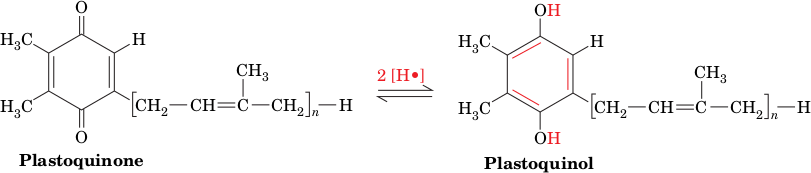

Photosynthesis
The notion that plants obtain nourishment from such insubstantial things as light and air was not validated until the eighteenth century. Evidence that plants produce a vital substance—O2 —was not obtained until 1771, when Joseph Priestley noted that the air in a jar in which a candle had burned out could be “restored” by introducing a small plant into the jar. In the presence of sunlight, photosynthetic organisms consume CO2 and H2O and produce O2 and “fixed” carbon in the form of carbohydrate.
Photosynthesis, in which light energy drives the reduction of carbon, is essentially the reverse of oxidative carbohydrate metabolism. Photosynthetically produced carbohydrates therefore serve as an energy source for the organism that produces them as well as for nonphotosynthetic organisms that directly or indirectly consume photosynthetic organisms. Moreover, photosynthesis, over the eons, generated all of the oxygen in the earth’s atmosphere (recall that the early earth’s atmosphere was devoid of O2; Section 1-1A). It is estimated that photosynthesis annually fixes ∼1011 tons of carbon, which represents the storage of over 1018 kJ of energy. About half of this activity is carried out by phytoplankton, mainly cyanobacteria (formerly known as blue-green algae, although they are prokaryotes). The process by which light energy is converted to chemical energy has its roots early in evolution, and its complexity is consistent with its long history. Our discussion focuses first on purple photosynthetic bacteria, because of the relative simplicity of their photosynthetic machinery, and then on plants, whose chloroplasts are their site of photosynthesis.
The two stages of photosynthesis are traditionally referred to as the light reactions and dark reactions:
In the light reactions, specialized pigment molecules capture light energy and are thereby oxidized. A series of electron-transfer reactions, which culminate with the reduction of NADP to NADPH, generate a transmembrane proton gradient whose energy is tapped to synthesize ATP from ADP + Pi. The oxidized pigment molecules are reduced by H2O, thereby generating O2.
The dark reactions use NADPH and ATP to reduce CO2 and incorporate it into the three-carbon precursors of carbohydrates.
As we will see, both processes occur in the light and are therefore better described as light-dependent and light-independent reactions. After describing the chloroplast and its contents, we consider the light reactions and dark reactions in turn.
Two-Center Electron Transport Is a Linear Pathway That Produces O2 and NADPH
In plants and cyanobacteria, photosynthesis is a noncyclic process that uses the reducing power generated by the light-driven oxidation of H2O to produce NADPH. This multistep process involves two photosynthetic reaction centers (RCs) that each bear considerable resemblance to PbRCs. These RCs are photosystem II (PSII), which oxidizes H2O, and photosystem I (PSI), which reduces NADP+. Each photosystem is independently activated by light, with electrons flowing from PSII to PSI. PSII and PSI therefore operate in electrical series to couple H2O oxidation with NADP+ reduction.
Evidence for the existence of two photosystems came from observations that in the presence of both red light (which activates only PSI) and yellow-green light (which also activates PSII), plants produce O2 (i.e., oxidize H2O) at a greater rate than the sum of the rates for each light acting alone. The herbicide 3-(3,4-dichlorophenyl)-1,1-dimethylurea (DCMU)
(DCMU)
blocks electron flow from PSII to PSI so that even with adequate illumination (i.e., activation of both PSI and PSII), PSI is not supplied with electrons, PSII cannot be reoxidized, and photosynthetic oxygen production ceases. The pathway of electron transport in the chloroplast is more elaborate than in purple photosynthetic bacteria. The components involved in electron transport from H2O to NADPH are largely organized into three thylakoid membrane-bound particles (Fig. 19-11): PSII, a cytochrome b6f complex, and PSI. Electrons are transferred between the complexes via mobile electron carriers, much as occurs in the respiratory electron-transport chain. The ubiquinone analog plastoquinone (Q), via its reduction to plastoquinol (QH2), links PSII to the cytochrome b6f complex, which, in turn, interacts with PSI through the mobile peripheral membrane protein plastocyanin (PC).
Electrons eventually reach ferredoxin–NADP+ reductase (FNR), where they are used to reduce NADP+. The oxidation of water and the passage of electrons through a Q cycle generate a transmembrane proton gradient, with the greater [H+] in the thylakoid lumen. The free energy of the proton gradient is tapped by chloroplast ATP synthase.
The various prosthetic groups of the photosynthetic apparatus of plants can be arranged in a diagram known as the Z-scheme (Fig. 19-12). As in other electron-transport systems, electrons flow from low to high reduction potentials. The zigzag nature of the Z-scheme reflects the two loci for photochemical events (one at PSII, one at PSI) that are required to drive electrons from H2O to NADP+.